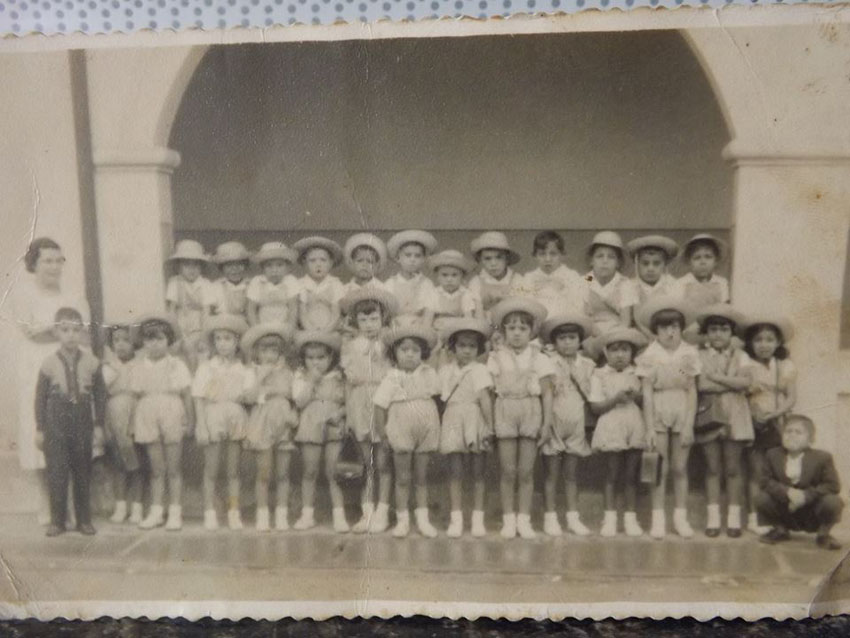

(Página em construção!)
| Se você tem informações sobre a professora Desauda, suas artes, fotografias, etc., fale conosco e, por gentileza, nos envie através do formulário existente na aba ou nos envie pelo e-mail "Contato". |
 Quando eu tinha sete anos de idade, iniciei no Jardim de Infância no Grupo Escolar Miguel Schleder. A escola ficava na frente, em diagonal, do açougue onde eu morava com a minha família na casa anexa. Naquele dia (em 1954), para ir à escola, entrei no açougue onde meu pai trabalhava, estava chovendo, e ele me orientou que fosse assim mesmo, pois a escola era do outro lado da rua. |
GRUPO DE TEATRO “SILVEIRA NETTO Ás vezes bastam apenas duas pessoas afeiçoadas á arte teatral para fazer florescer idêntica afeição em um número incontável de outras. Foi o que aconteceu na vizinha cidade de Morretes, onde o Dr. Francisco de Almeida Neto e a Professora Desauda Bosco da Costa Pinto conseguiram interessar as pessoas de suas relações nos problemas da ribalta e, assim, organizar um conjunto amador apreciável que recebeu o nome de Grupo Teatral “Silveira Netto”, numa homenagem ao Poeta Morretense. Hoje toda Morretes acompanha com desvelo as atividades do novel conjunto.Fundado em setembro de 1954, logo após estreava o Grupo com a comédia “O Amor Está Sempre na Moda”, de autoria da própria Senhora Desauda. Com a peça, visitaram os amadores Morretenses esta Capital, exibindo-se no Auditório do Instituto de Educação e receberam referências ótimas da crítica. Posteriormente apresentaram-se também com sucesso ao público de Antonina. No momento o Grupo ensaia nova comédia, também der autoria da Professora Desauda e que tem por título “O Sacy”, reunindo em seu elenco, entre outros, os seguintes elementos da sociedade de Morretes: Nelly Angulski, Trindade Martinho Alpendre, Francisco de Almeida Neto, Arnaldo José Malucelli e Sidney Antunes de Oliveira. A Direção é da própria autora da peça, tendo como assistente o Dr. Francisco. Graças a tais pioneiros, é que se desenvolve o gosto pelo teatro, mesmo nas menores localidades, levando a todos o contato com a mais humana das artes. “G.S.B.” (Jornal “Diário do Paraná”, 12 de abril de 1955, Página 4, Coluna “Espelho da Ribalta”.) (Colaboração de Eric Joubert Hunzicker) |